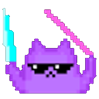
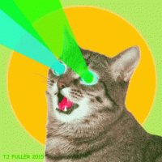
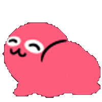
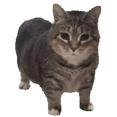

ㅇㅂ)공포게임에서 고양이를 만지면 안되는 이유
댓글

ㅋㅋㅋㅋㅋㅋㅋㅋㅋㅋ
어씨 근데 탁자 앞에 애는 언제부터 있던거야 ㄷㄷ
어두워진 타이밍에 걸어온듯. 손님인데 들어오는 타이밍에 이벤트 발생한거같음 ㅋㅋㅋㅋㅋ
뭔가 배경 쪽에 움직이는게 있어서 지켜봤더니 탁자쪽으로 걸어오더라고. 고양이한테 정신 팔려 있으면 못 볼 만함
우이이이아이이우이이아이이 우이이이아이이우이이아이이 우이이이아이이우이이아이이 우이이이아이이우이이아이이 우이이이아이이우이이아이이 우이이이아이이우이이아이이 우이이이아이이우이이아이이 우이이이아이이우이이아이이 우이이이아이이우이이아이이 우이이이아이이우이이아이이 우이이이아이이우이이아이이 우이이이아이이우이이아이이 우이이이아이이우이이아이이 우이이이아이이우이이아이이 우이이이아이이우이이아이이 우이이이아이이우이이아이이 우이이이아이이우이이아이이 우이이이아이이우이이아이이 우이이이아이이우이이아이이 우이이이아이이우이이아이이 우이이이아이이우이이아이이 우이이이아이이우이이아이이



디제이 펌디스 파뤼
어이어이
댓글들 파티 이모티콘 하는게 귀엽네 ㅋㅋㅋ
